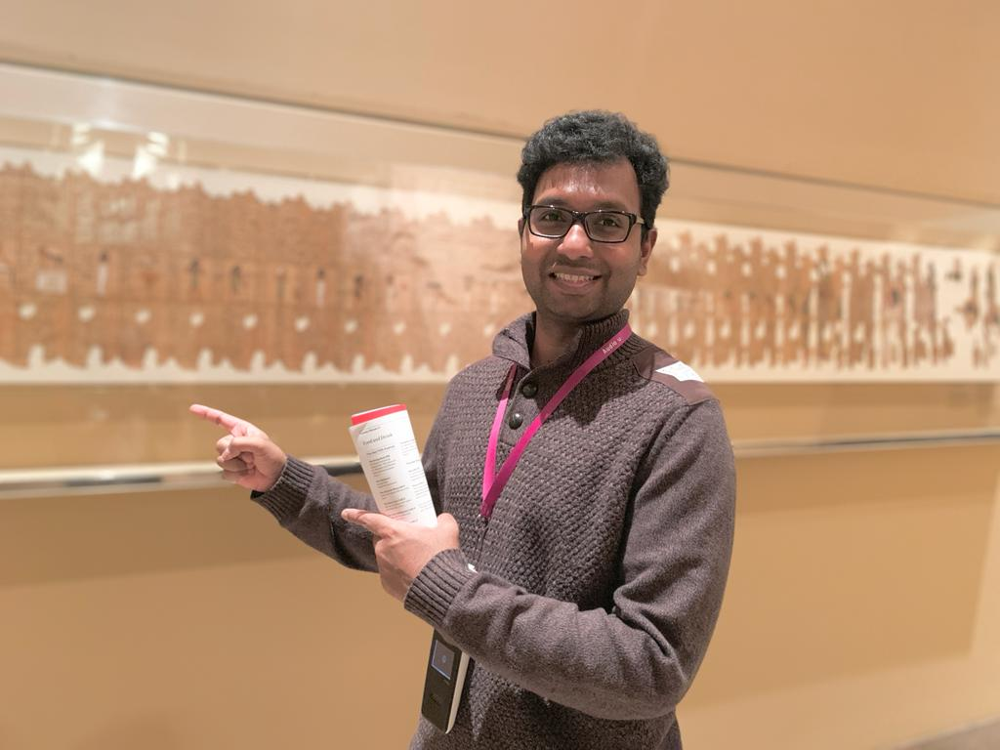
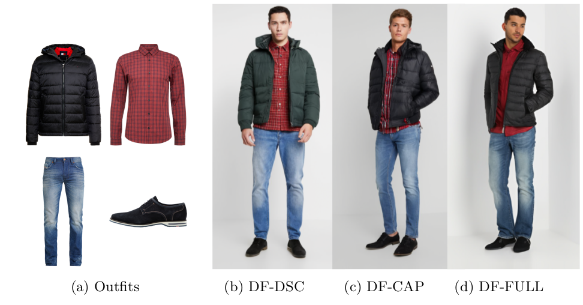
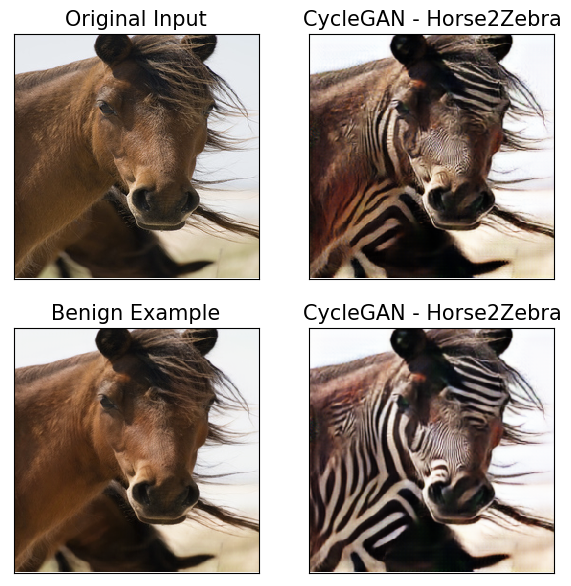
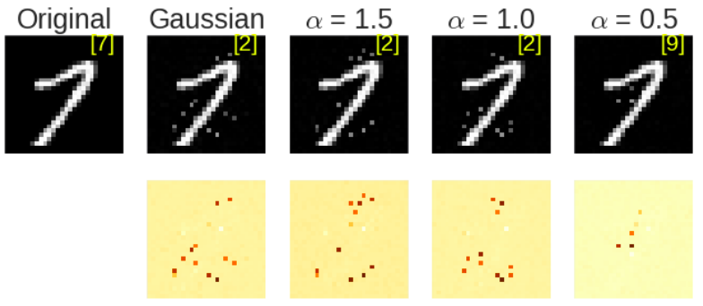

|
Vignesh Srinivasan I am a Senior Applied Scientist at Zalando Research in Berlin, Germany. My research interests include score-based generative models and robustness of deep neural networks. My current focus at Zalando is to work on innovative machine learning solutions to bypass the expensive process of fashion studio photography. I prototype the generation of high resolution digital humans wearing curated outfits using generative models. At Zalando, I work with Nikolay Jetchev and Tofigh Naghibi. Previously, I worked as a researcher at the Fraunhofer Heinrich Hertz Institute and Technische Universität Berlin with Wojciech Samek and Shinichi Nakajima. I received my PhD in machine learning under the supervision of Prof. Dr. Klaus-Robert Müller. |
 |
{kind=link}
Selected Publications |
|

|
Diffusion Models for Outfit Rendering: Novel Conditioning Architectures for Subject-driven Generation
Vignesh Srinivasan, Nikolay Jetchev, Martin Heusel, Tofigh Naghibi ECCV Workshops, 2022 Paper We propose novel conditioning architectures for diffusion models for generating curated outfits to be rendered on a digital human in predefined pose. |

|
Langevin Cooling for Unsupervised Domain Translation
Vignesh Srinivasan, Klaus-Robert Müller, Wojciech Samek, Shinichi Nakajima IEEE Transactions on Neural Networks and Learning Systems, 2022 Paper / Code We propose to perform Langevin dynamics on fringe samples to lower the temperature of test samples before applying the base domain translation method resulting in a significantly improved performance. |

|
Robustifying Models Against Adversarial Attacks by Langevin Dynamics
Vignesh Srinivasan, Csaba Rohrer, Arturo Marban Klaus-Robert Müller, Wojciech Samek, Shinichi Nakajima Neural Networks, 2021 Paper We introduce a generative model of the conditional distribution of the inputs given labels that can be learned through a supervised Denoising Autoencoder (sDAE) in alignment with a discriminative classifier. |
|

|
Benign examples: Imperceptible changes can enhance image translation performance
Vignesh Srinivasan, Klaus-Robert Müller, Wojciech Samek, Shinichi Nakajima AAAI, 2020 Paper We propose to perform Langevin dynamics, which makes a subtle change in the input space bringing them close to the data manifold, producing benign examples. The effect is significant improvement of the mapped image on the target domain. |
|

|
Black-Box Decision based Adversarial Attack with Symmetric $\alpha$-stable Distribution
Vignesh Srinivasan, Ercan E Kuruoglu, Klaus-Robert Müller, Wojciech Samek, Shinichi Nakajima EUSIPCO, 2021 Paper We generalize the Boundary Attack, a state-of-the-art blackbox decision based attacking strategy, and propose the Levy-Attack, where the random walk is driven by symmetric $\alpha$-stable random variables. |

|
To pretrain or not? A systematic analysis of the benefits of pretraining in diabetic retinopathy
Vignesh Srinivasan, Nils Strodthoff, Jackie Ma, Alexander Binder, Klaus-Robert Müller, Wojciech Samek PLoS ONE, 2022 Paper / Code We investigate the effect of pretraining on downstream medical task using different aspects such as quantitative performance, statistics of the learned feature representations, interpretability and robustness to image distortions. |
Doctoral Thesis |
|
|
Vignesh Srinivasan, , 2021 Paper / Code . |
|
Website template borrowed from source code. |